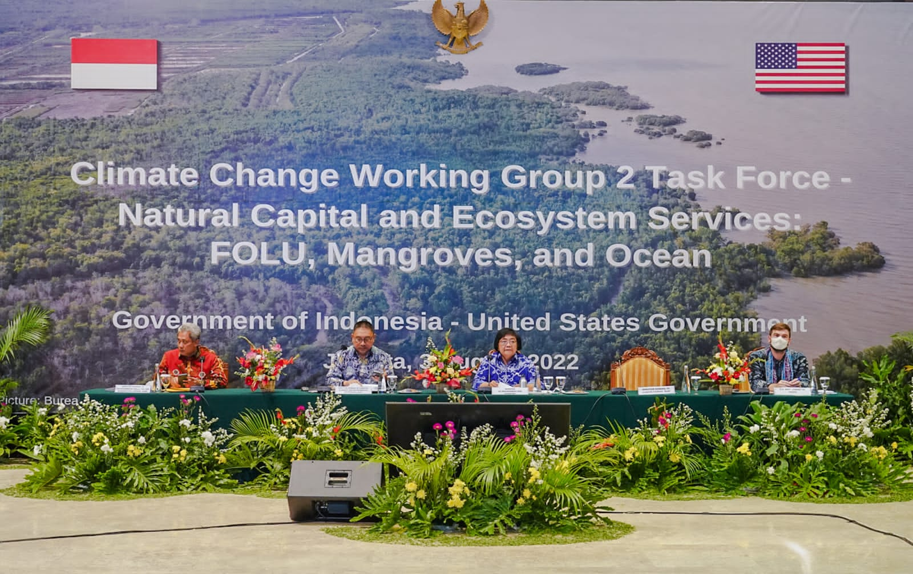
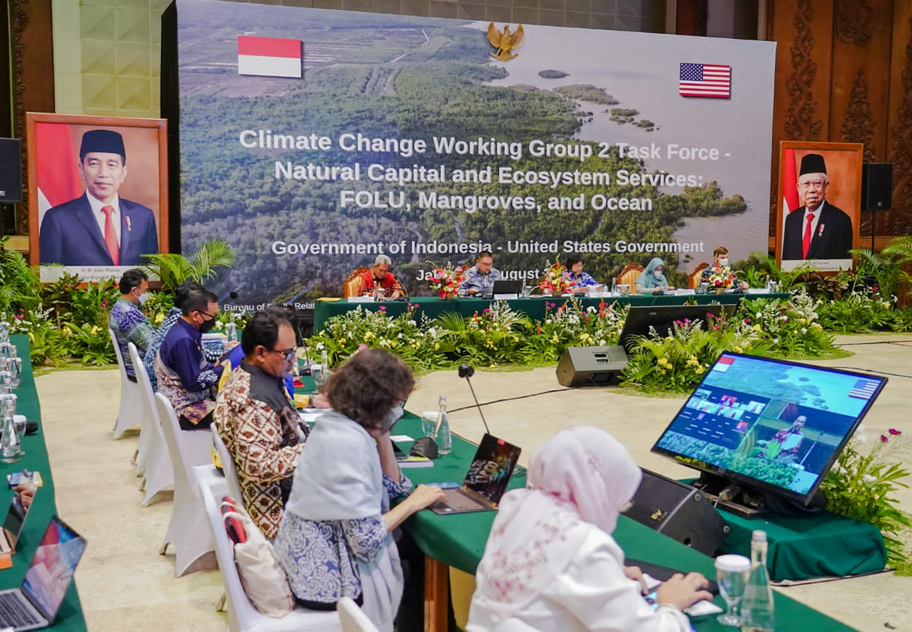
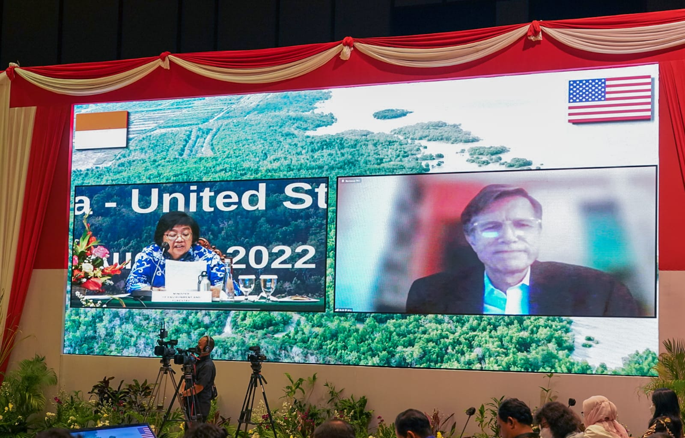
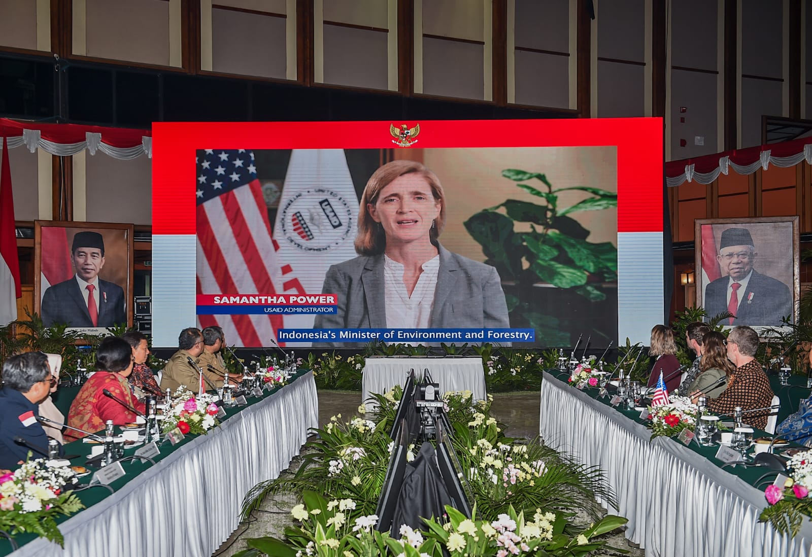
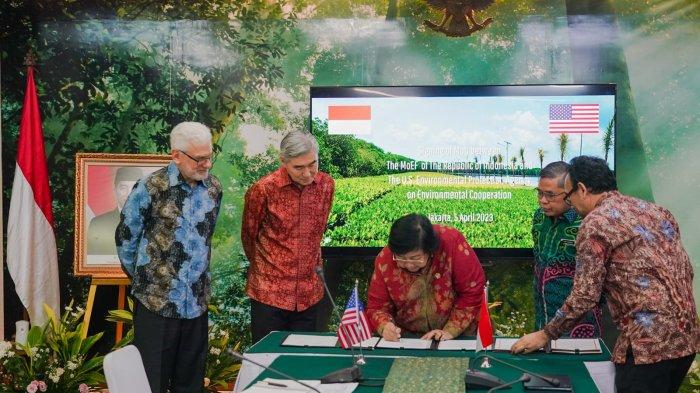
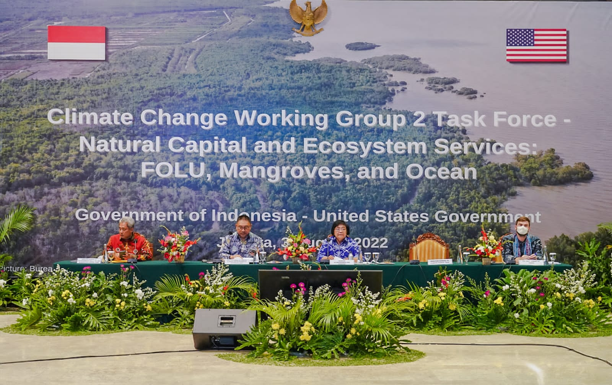
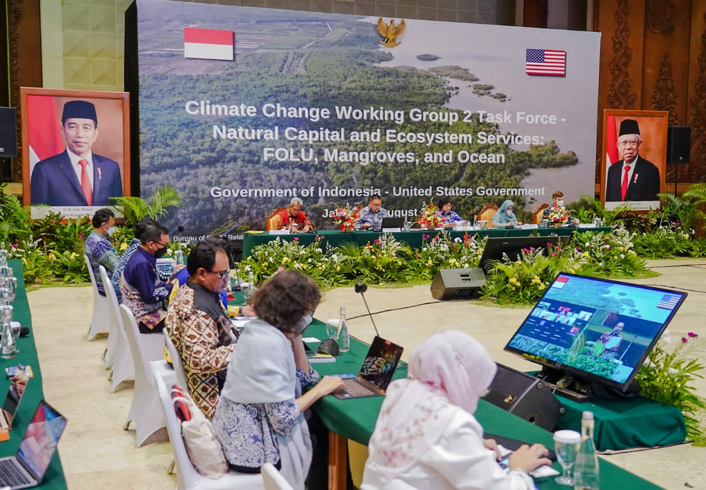
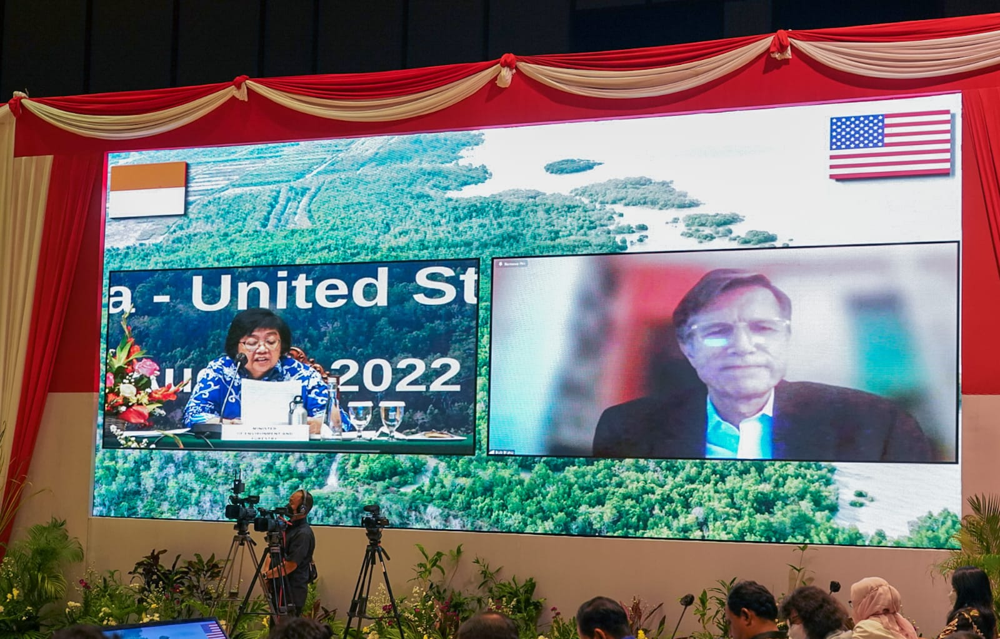
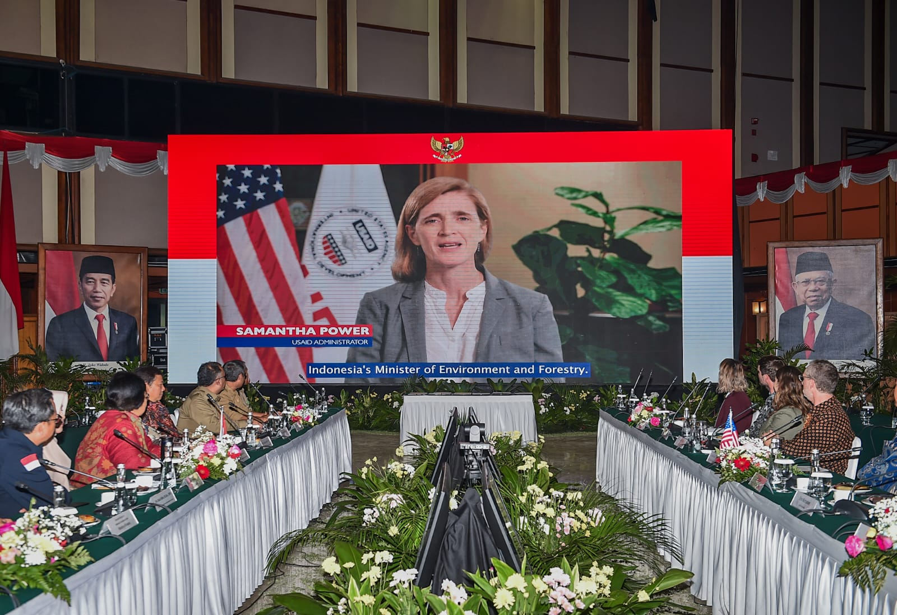
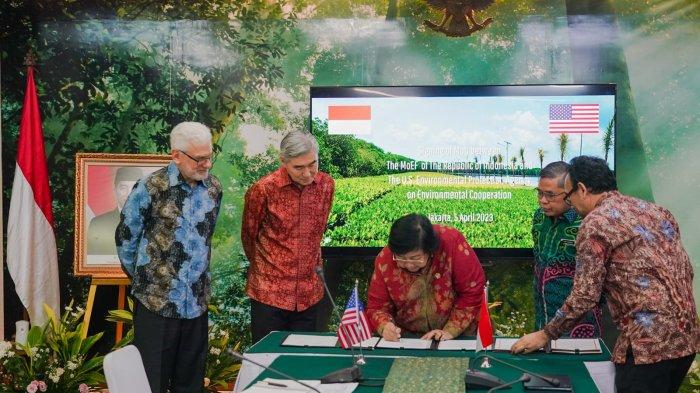

Penjelasan
Kerja sama bilateral Indonesia dan Amerika Serikat di bidang lingkungan hidup memainkan peran yang sangat
penting dalam menghadapi tantangan lingkungan global, terutama dalam konteks perubahan iklim, konservasi
alam, dan pengelolaan sumber daya alam secara berkelanjutan. Kedua negara memiliki kesadaran yang tinggi
akan pentingnya menjaga kelestarian lingkungan hidup, tidak hanya untuk kepentingan masing-masing
negara, tetapi juga demi keberlanjutan planet ini secara keseluruhan. Kerja sama ini mencakup berbagai
inisiatif untuk mengatasi perubahan iklim, melestarikan keanekaragaman hayati, serta menangani isu-isu
lingkungan lainnya seperti polusi laut dan pengelolaan sampah plastik.
A. Pengurangan Emisi Karbon dan Pengelolaan Hutan Berkelanjutan
Salah satu fokus utama dari kerja sama Indonesia dan Amerika Serikat di bidang lingkungan hidup adalah
pengurangan emisi karbon yang berasal dari sektor-sektor penting, seperti deforestasi dan konversi
lahan. Indonesia, sebagai negara dengan hutan tropis terbesar ketiga di dunia, memiliki peran strategis
dalam mengurangi emisi karbon global. Pemerintah Indonesia, dengan dukungan dari Amerika Serikat, telah
berkomitmen untuk mengurangi deforestasi dan meningkatkan pengelolaan hutan secara berkelanjutan,
melalui program-program seperti Forest and Climate Change Mitigation (FCMC) yang dikelola oleh USAID.
Program FCMC bertujuan untuk memperkuat kapasitas Indonesia dalam mengelola hutan dengan cara yang
mengurangi emisi gas rumah kaca, melalui strategi pengelolaan yang berfokus pada konservasi dan
restorasi ekosistem hutan. Program ini juga melibatkan pihak swasta, komunitas lokal, dan pemerintah
daerah untuk memastikan pengelolaan hutan yang adil dan efektif.
Di samping itu, kedua negara juga mendukung pengembangan kebijakan terkait pembangunan rendah karbon
yang mengintegrasikan aspek ekonomi dan lingkungan. Hal ini termasuk inisiatif untuk meningkatkan
penggunaan energi terbarukan dan praktik pertanian yang ramah lingkungan, serta mendorong
perusahaan-perusahaan Indonesia untuk mengadopsi teknologi yang lebih efisien dan ramah lingkungan dalam
operasi mereka.
B. Pengembangan Energi Terbarukan
Kerja sama Indonesia dan Amerika Serikat juga mencakup pengembangan energi terbarukan sebagai bagian
dari upaya bersama untuk mengurangi ketergantungan pada energi fosil dan mengurangi dampak perubahan
iklim. Dalam beberapa tahun terakhir, Amerika Serikat telah memberikan bantuan teknis dan finansial
untuk pengembangan energi terbarukan di Indonesia, khususnya di sektor tenaga surya, tenaga angin, dan
energi biomassa.
Perusahaan-perusahaan Amerika, seperti General Electric (GE) dan ExxonMobil, telah terlibat dalam
berbagai proyek energi terbarukan di Indonesia, yang bertujuan untuk memperkenalkan teknologi baru,
mempercepat transisi energi, dan mendukung pembangunan infrastruktur yang diperlukan untuk memanfaatkan
sumber daya alam yang terbarukan. Sebagai contoh, proyek pembangkit listrik tenaga angin di sejumlah
wilayah Indonesia diharapkan dapat mengurangi emisi gas rumah kaca, serta menyediakan sumber energi yang
lebih berkelanjutan dan ramah lingkungan.
Selain itu, program-program seperti USAID Sustainable Landscapes turut berperan dalam mendukung
pengembangan energi bersih dan efisien di Indonesia, sambil menjaga integritas ekosistem alami. Program
ini bertujuan untuk mengintegrasikan kebijakan energi dengan strategi konservasi lahan dan hutan, yang
memungkinkan Indonesia untuk beralih ke model pembangunan yang lebih berkelanjutan.
C. Perlindungan Keanekaragaman Hayati
Keanekaragaman hayati Indonesia yang sangat kaya, termasuk hutan tropis, terumbu karang, dan berbagai
spesies endemik, menjadikan negara ini sebagai salah satu titik fokus global dalam upaya perlindungan
alam. Kerja sama antara Indonesia dan Amerika Serikat berfokus pada konservasi dan perlindungan
ekosistem yang sangat penting bagi keberlangsungan hidup manusia dan makhluk hidup lainnya.
Salah satu inisiatif penting adalah program perlindungan terumbu karang dan ekosistem pesisir, yang
didanai oleh USAID dan bekerja sama dengan lembaga-lembaga lokal dan internasional. Program ini berfokus
pada pengelolaan yang lebih baik terhadap kawasan konservasi laut, serta pengurangan ancaman terhadap
terumbu karang akibat perubahan iklim, polusi laut, dan penangkapan ikan yang tidak berkelanjutan. Dalam
kerangka ini, kedua negara juga berkomitmen untuk mendukung upaya mitigasi dan adaptasi terhadap
kerusakan ekosistem pesisir yang menjadi tempat hidup bagi berbagai spesies laut penting.
D. Penanggulangan Polusi Laut dan Sampah Plastik
Salah satu masalah lingkungan terbesar yang dihadapi Indonesia dan banyak negara lain di dunia adalah
polusi laut, terutama terkait dengan sampah plastik. Indonesia merupakan salah satu negara penyumbang
sampah plastik terbesar di dunia, dan kedua negara telah bekerja sama dalam mengurangi dampak negatif
dari masalah ini. Melalui berbagai program seperti USAID Oceans dan proyek-proyek mitigasi polusi
plastik, Indonesia dan Amerika Serikat bekerja sama untuk mengurangi sampah plastik yang mencemari laut,
serta meningkatkan kesadaran masyarakat tentang pentingnya pengelolaan sampah yang lebih baik.
Salah satu masalah lingkungan terbesar yang dihadapi Indonesia dan banyak negara lain di dunia adalah
polusi laut, terutama terkait dengan sampah plastik. Indonesia merupakan salah satu negara penyumbang
sampah plastik terbesar di dunia, dan kedua negara telah bekerja sama dalam mengurangi dampak negatif
dari masalah ini. Melalui berbagai program seperti USAID Oceans dan proyek-proyek mitigasi polusi
plastik, Indonesia dan Amerika Serikat bekerja sama untuk mengurangi sampah plastik yang mencemari laut,
serta meningkatkan kesadaran masyarakat tentang pentingnya pengelolaan sampah yang lebih baik.
E. Adaptasi Perubahan Iklim dan Pengelolaan Sumber Daya Alam
Perubahan iklim membawa dampak yang signifikan terhadap berbagai sektor kehidupan di Indonesia, termasuk
sektor pertanian, perikanan, dan ketahanan pangan. Untuk membantu Indonesia beradaptasi dengan perubahan
iklim, Amerika Serikat telah mendukung berbagai program adaptasi perubahan iklim yang bertujuan untuk
mengurangi kerentanannya terhadap dampak negatif dari perubahan iklim.
Program Climate Change Adaptation and Mitigation yang didanai oleh USAID, misalnya, mendukung pemerintah
Indonesia dalam merancang dan melaksanakan kebijakan untuk memperkuat ketahanan terhadap bencana alam,
memperbaiki pengelolaan sumber daya alam, serta meningkatkan kapasitas masyarakat lokal dalam menghadapi
dampak perubahan iklim. Program ini juga berfokus pada pertanian berkelanjutan, pengelolaan sumber daya
air, dan pemulihan ekosistem yang terdegradasi.
F. Peningkatan Kapasitas dan Kolaborasi Multilateral
Kerja sama Indonesia dan Amerika Serikat di bidang lingkungan hidup juga melibatkan forum-forum
multilateral seperti Konvensi Kerangka Kerja PBB tentang Perubahan Iklim (UNFCCC), Program Pembangunan
PBB (UNDP), dan Asia-Pacific Economic Cooperation (APEC), yang memungkinkan kedua negara untuk berbagi
pengalaman dan solusi terkait isu-isu lingkungan global. Dalam konteks ini, Indonesia dan Amerika
Serikat berkomitmen untuk bekerja sama dengan negara-negara lain untuk mencapai tujuan bersama dalam
mengatasi perubahan iklim dan mencapai tujuan pembangunan berkelanjutan.
G. Prospek Masa Depan
Kerja sama Indonesia dan Amerika Serikat dalam bidang lingkungan hidup di masa depan akan semakin
penting, mengingat tantangan yang semakin kompleks terkait dengan perubahan iklim, degradasi lingkungan,
dan ketahanan pangan. Dengan terus memperkuat kolaborasi dalam pengelolaan hutan, energi terbarukan,
konservasi keanekaragaman hayati, serta penanggulangan polusi laut, kedua negara memiliki peluang besar
untuk menciptakan solusi yang inovatif dan efektif untuk melestarikan planet ini. Selain itu, kemajuan
dalam teknologi hijau dan inovasi berkelanjutan akan semakin membuka jalan bagi Indonesia dan Amerika
Serikat untuk menjadi pemimpin dalam upaya perlindungan lingkungan global.
Secara keseluruhan, hubungan Indonesia dan Amerika Serikat dalam bidang lingkungan hidup menunjukkan
potensi besar untuk menghadapi tantangan global bersama-sama, mengingat kedua negara memiliki sumber
daya, pengetahuan, dan komitmen yang kuat untuk menciptakan masa depan yang lebih hijau dan
berkelanjutan.